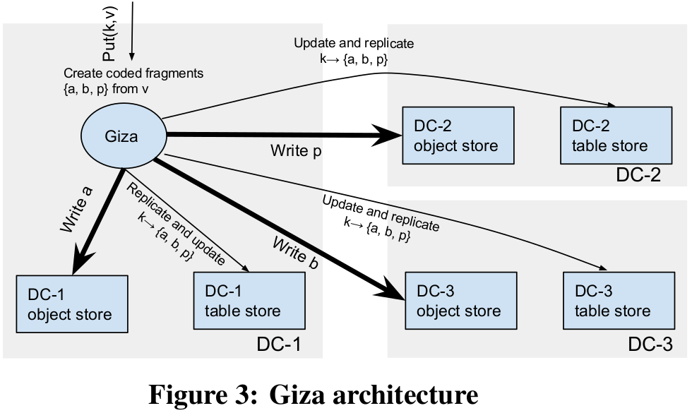

@ATC'17 @ Erasure Coding across data centers @Separate the data and metadata path
Giza: Erasure Coding Objects across Global Data CentersSummaryStrength (Contributions of the paper)Weakness (Limitations of the paper)Future Works
Motivation of this paper: This paper intends to solve the problem of reducing the cross-DC latency while maintaining the strong consistency of the metadata.
Microsoft OneDrive Characteristics:
Giza: Giza is a strongly consistent versioned object store, built on top of Azure storage, and optimizes for latency and is fast in the common case. The goal of Giza:
1) Giza should guarantee strong consistency while also minimizing operation latency. 2) Giza should make full use of existing cloud infrastructure to simlipy its implementation and deployment.

Paxos using Cloud APIs: Giza implements both Paxos and Fast Paxos to optimize the performance over cross-DC acceptors, and reduces the metadata path latency.
| Paxos | Fast Paxos |
|---|---|
| Can commit with 2 round trips | Can commit with 1 round trip |
| Requires majority of replicas to commit | Requires more than the majority of replicas to commit |
The naive version of Giza first writes out fragments (data and parity), and then writes out metadata, resulting in two or more cross-DC round trips. (need to reduce the latency) Giza Put Operation:
- Execute metadata and data path in parallel.
- Upon success, return acknowledgement to the client
- In the background, update highest committed version number in the metadata row.
Giza Get Operation:
- Optimistically read the latest commited version locally
- Execute both data path and metadata path in parallel:
a. Data path retrieves the data fragments indicated by the local latest committed version. b. Metadata path will retrieve the metadata row from all data centers and validate the latest committed version.
Implementation and Evaluation: Giza is implemented in C++ and uses Azure Blob and Table storage to store fragments and metadata. Evaluation: